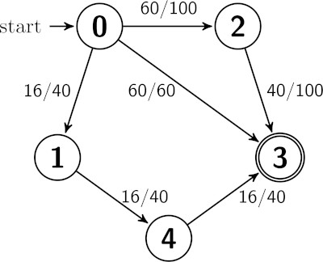

Package delivery isn’t what it used to be. With a rise in premium package delivery services, FedEx and UPS have now created a new tier in their delivery service options: FedUps sub-premium delivery subscription service. Subscribers to FedUps will receive a small discount on their shipping costs, but they must agree to receive only the worst customer treatment and delivery times for all packages. One example of this intentionally poor treatment is that FedUps will now send your packages to you via routes that are not guaranteed to be the most efficient. Instead, FedEx and UPS will try to use FedUps orders to do their best to minimize the excess capacity of all of their vehicles.
Your algorithm will receive two weighted graphs (lists of edges) as input. The first graph will represent the total transportation capacities of their vehicles. The nodes represent cities, edges represent trucks traveling between cities, and the weight of the edge represents the maximum weight that can be carried by each truck. The second graph will represent the remaining available capacities on all vehicles. The same nodes and edges will be present as for the first graph, but now the edges represent how much more cargo each truck can carry.
Your goal will be to write an algorithm which finds the path from a given start city to a destination city which minimizes the sum of load percentages across the nodes in the graph. Note that the number of trucks is irrelevant, we only care to minimizes the sum of load percentages. At-capacity trucks may not be used, since FedUps could not add a package to that truck.
Your input will be 5 parameters containing the following information:
numCitites - the number of total cities; the cities are integers from 0 to numCities − 1.start - the start city.end - the destination city.capacities - a list of the total capacities of each of the trucks, given as a list of strings. Each string in the list contains a comma-separated list of integer values: the truck’s starting city, the truck’s destination city, and the truck’s total carrying capacity.available - a list of available capacity of each of the trucks, given as a list of strings. Each string in the list contains a comma-separated list of integer values: the truck’s starting city, the truck’s destination city, and the truck’s available capacity.The provided skeleton code, below, already reads in the input from an example.txt file.
Your output will be a list of integers indicating the sequence of cities which starts in the start city and ends in the destination city, that also minimizes the sum of load percentages. The main method provided will print this list one city per line. An example output is given below.
The worst-case asymptotic running time of your program should belong to O(c⋅t), where c is the number of cities and t is the number of trucks.

Consider the graph to the right. The start is at node 0, and the end is at node 3.
In this example, there are three paths from the start node to the end node. The correct path your algorithm should return would be [0,2,3].
As the third path minimizes the sum of load percentages, it would be the output path.
The actual output would be:
0
2
3If we made one graph change – changing the available capacity of the (0,3) edge to 60 (so there is a lot of available space on that truck), then the output would be:
0
3numCities = 5
start = 0end = 3capacities the list:0,1,40
0,2,100
0,3,60
1,4,40
2,3,100
4,3,40available the list:0,1,16
0,2,60
0,3,0
1,4,16
2,3,40The exact input would be the following; this is available in the example.txt file.
5
0
3
0,1,40
0,2,100
0,3,60
1,4,40
2,3,100
4,3,40
---
0,1,16
0,2,60
0,3,0
1,4,16
2,3,40
4,3,16The exact output would be:
0
2
3Main.py, FedUps.py, and Graph.py for Python; Main.java, FedUps.java, and Graph.java for Java.
compute() method in the FedUps class. The compute() method should execute the entirety of your algorithm and return the list of cities in the path.Graph class using an Adjacency List graph implementation. You should then use this in your FedUps class.Main.java or main.py files to test your algorithm, but they will not be used during grading.FedUps.java and Graph.java} or {FedUps.py and Graph.py} files on Gradescope. Do not submit Main.java, main.py, or any test files.python Main.py or python3 Main.py for Pythonjavac *.java && java Main for JavaYou must follow the rules about Collaboration and Outside Sources in the syllabus.
For PA1, you are not allowed to use generative AI tools to help you solve this problem.